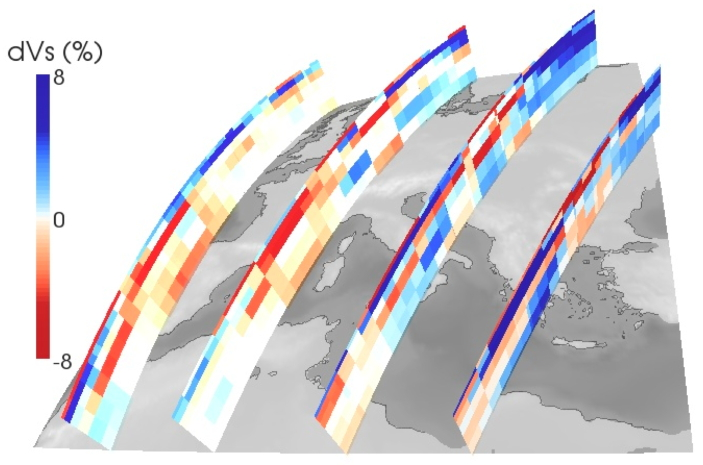

Finite-frequency tomography of the European-Mediterranean region
A two-step approach was followed here to reveal the seismic 3-D shear-velocity structure of the
European-Mediterranean region.
A detailed description of the work
can be found here:
Peter, D., L. Boschi, F. Deschamps, B. Fry, G. Ekstrom, and D. Giardini, 2008.
A new finite-frequency shear-velocity model of the European-Mediterranean region
, Geophys. Res. Lett.,
35, L16315, doi:10.1029/2008GL034769.
Phase-velocity maps
First, we inverted an enriched, high-quality phase-anomaly database (Fry, 2008) of Rayleigh waves
for phase-velocities at several, distinct periods (about 600,000 observations in total).
In order to compare the theoretical descriptions involved in the inversions,
the exercise was done for both ray-theoretical and finite-frequency-derived sensitivity kernels.
From these phase-velocity maps, dispersion curves at every location of the
high-resolution parameterization over Europe and the Mediterranean region are constructed.
3-D shear-velocity model

Second, an extensive model-space search by a combined Monte-Carlo and gradient
descent algorithm was conducted for each dispersion curve
to find the corresponding profiles of shear-velocities (Vs) with depth.
The advantage of this two-step approach is that together with such a Monte-Carlo
inversion, we are also able to give an estimate of the uncertainty in the obtained model
parameters (since we know now also the posterior distributions; in case you're interested, have
a look at the paper Peter et al. 2008 cited above).
The resulting Vs-pertubations (in percent %) with respect to PREM values
of the European-Mediterranean region can be downloaded
in ASCII-format (6.3 MB):
mediterranean-Vs-model.txt .
This model is derived using the finite-frequency dispersion curves
(not ray-theoretical ones).
It is given at regular lat/lon-locations (using 1 x 1 degree steps) and
depths between 40 km and 395 km (using 5 km step intervals).
The file format is:
# lat(deg), lon(deg), depth(km), Vs-perturbation(%), PREM Vs(km/s).
references:
Peter, D., L. Boschi, F. Deschamps, B. Fry, G. Ekstrom, and D. Giardini, 2008.
A new finite-frequency shear-velocity model of the European-Mediterranean region
, Geophys. Res. Lett.,
35, L16315, doi:10.1029/2008GL034769.
Fry, B., L. Boschi, G. Ekstrom and D. Giardini, 2008.
Europe-Mediterranean tomography:
High correlation between new seismic data and independent geophysical observables,
Geophysical Research Letters, 35: p. L04301.